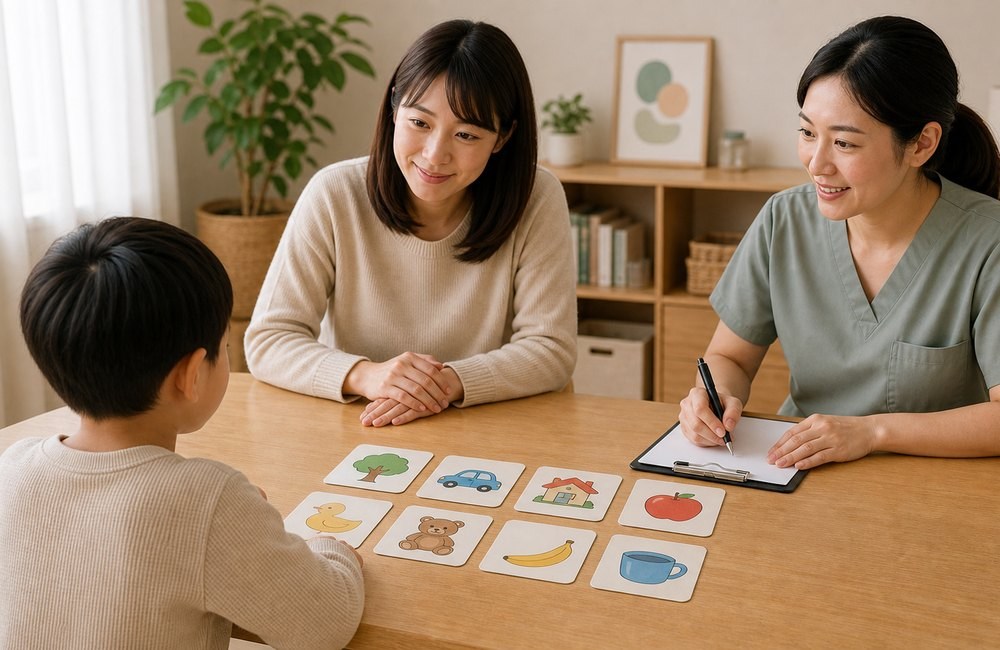

2 歲晚說話2 歲還不會說話／詞彙少於 50 個怎麼辦？
2 歲還不太會說話，是很多家長搜尋「語言發展遲緩」時最常遇到的第一個疑問。這個年紀的孩子不一定每個字都清楚，也不一定會講長句，但通常已經能用一批常用詞表達需求，並開始把兩個詞合在一起，例如「媽媽抱」「要餅乾」「車車走」。如果孩子幾乎沒有有意義的詞、詞彙增加很慢，或到 2 歲仍沒有雙詞組合，就建議安排語言與整體發展評估。[1][2][5]
什麼是 late talker？
英文常用 late talker 描述「表達語言明顯較慢，但其他發展看起來相對穩定」的孩子。也就是說，孩子可能聽得懂不少、會玩、會用手勢和大人互動，但口語詞彙和句子明顯少於同齡孩子。這不是正式診斷，而是一個提醒：孩子目前的表達語言落後，需要進一步看背後原因與後續進展。[3]
有些 late talker 之後會追上同齡孩子，但也有一部分孩子會持續出現語言、學習或社交溝通困難。因此重點不是急著貼標籤，而是不要只用「再等等」處理所有晚說話的狀況。
先分清楚：是不說、少說，還是聽不懂？
家長常說「他不會說話」，但實際情況可能很不同。評估前可以先觀察孩子比較像哪一種：
- 完全或幾乎沒有有意義詞彙：很少固定用同一個聲音或詞代表人、物品或需求。
- 會說一些詞，但詞彙很少：可能會叫人、說幾個食物或玩具名稱，但詞彙長期沒有增加。
- 會說詞，但不會組合：會說「車」「媽媽」「水」，但還不會說「媽媽抱」「要水」。
- 表達少，理解也弱：簡單指令、常見物品名稱、日常情境提示都不太懂。
- 語言少，互動也少：很少看人、指物、模仿、分享興趣或輪流互動。
這些類型背後需要的協助不一樣。單純表達慢的孩子，治療重點可能是增加詞彙與句子；如果理解、聽力、互動或整體發展也有疑慮，就需要更完整的發展評估。
2 歲需要留意的警訊
- 會說的有意義詞彙很少，且進步速度很慢。
- 還不會把兩個詞合在一起表達需求。
- 聽不懂簡單日常指令，例如「拿鞋鞋」「給媽媽」。
- 很少用手勢、眼神或聲音主動表達。
- 家長覺得孩子好像常常聽不到，或曾有反覆中耳炎、聽力疑慮。
- 原本會說的詞或互動能力退步、消失。
可能原因有哪些？
2 歲晚說話不一定只有一種原因，常見需要一起排除或確認的方向包括：
- 表達語言較慢：孩子想溝通，也能理解不少，但詞彙和句子產出較慢。
- 接收性語言困難：不只是說得少，也比較難聽懂詞彙、問題或指令。
- 聽力因素：聽不清楚會影響語音輸入，也可能讓孩子看起來像不聽指令。
- 語音或口腔動作因素：孩子可能想說，但發音、模仿聲音或口腔動作協調較困難。
- 社交溝通或整體發展因素：若同時有眼神、手勢、遊戲、模仿或動作發展疑慮，需要完整評估。
語言治療評估會看什麼？
語言治療師通常不只數孩子會說幾個字，也會看孩子怎麼溝通。常見觀察包含：孩子會不會回應名字、聽懂熟悉詞彙、理解簡單指令、用手勢表達、模仿聲音或動作、輪流玩、主動分享，以及發音和口腔動作是否有明顯困難。必要時，也會建議聽力檢查或轉介兒科、復健科、兒童發展聯合評估中心。
在家可以先做的觀察
把孩子目前會說的詞記下來，包含人名、食物、玩具、動作詞與常用聲音。也記錄他能聽懂什麼、會不會指物、會不會模仿、會不會主動拿東西給你看。這些資料能幫助醫師或語言治療師更快判斷孩子的溝通輪廓。
在家可以怎麼陪孩子多說？
在等待評估或療育期間，家長可以先把語言刺激放進日常生活，不需要買特別教材。
- 少問考題，多描述：與其一直問「這是什麼？」可以多說「車車跑好快」「你要喝水」。
- 跟著孩子的興趣說：孩子正在看球，就說「球」「丟球」「球滾走了」。
- 把孩子的聲音擴展成詞：孩子說「ㄅㄨ」，你可以回「車車，車車來了」。
- 製造溝通機會：把想要的東西放在看得到但拿不到的位置，等待孩子看你、指、發聲或嘗試說。
- 給時間等待：大人說完後停幾秒，讓孩子有機會回應，不急著替他說完。
常見問題
男生比較晚說話，所以可以再等等嗎？
性別不能當作唯一解釋。男孩女孩都可能晚說話，也都可能需要協助。判斷重點仍是詞彙、理解、手勢、互動、聽力與進步速度。
孩子聽得懂但不說，還需要評估嗎？
如果孩子理解力、互動和手勢都不錯，確實可能只是表達比較慢；但 2 歲仍缺乏雙詞組合或詞彙長期很少，仍建議評估，因為早期介入可以讓家長更快用對方法。
看影片或學習 App 可以幫助說話嗎？
語言最需要的是輪流、回應與真實互動。影片可以偶爾作為素材，但不能取代大人和孩子之間的面對面對話、共讀、遊戲與日常照顧互動。
參考文獻
- 衛生福利部國民健康署：兒童發展篩檢服務。https://www.hpa.gov.tw/4816/s
- American Speech-Language-Hearing Association：Communication Milestones。https://www.asha.org/public/developmental-milestones/communication-milestones/
- American Speech-Language-Hearing Association：Late Language Emergence。https://www.asha.org/practice-portal/clinical-topics/late-language-emergence/
- 衛生福利部：發展遲緩兒童早期療育。https://www.mohw.gov.tw/cp-88-238-1.html
- Centers for Disease Control and Prevention：Milestones by 2 Years。https://www.cdc.gov/act-early/milestones/2-years.html
- National Institute on Deafness and Other Communication Disorders：Speech and Language Developmental Milestones。https://www.nidcd.nih.gov/health/speech-and-language
本文提供一般觀察方向，若孩子有退步、聽力疑慮或互動明顯困難，請儘早就醫或安排評估。